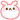

ぐわし。ひめたんです(。・ω・。)ノ
お友達に抱きついた瞬間に「いいにおいするー」て言われて高山ったわず。
シャンプーのおかげカナ？洗剤？
いやいや、ひめたんの体内からきっといい感じのエキスを発信してると信じましょ(^^)ノ
※こめこめ※
 ひめたんは林檎は皮ごと食べられますか？それとも剥かないと食べられない？
ひめたんは林檎は皮ごと食べられますか？それとも剥かないと食べられない？
むかないといやーあ('・ω・`)
うさぎリンゴの耳でさえ取ってしまいたい。

痛いいたいー
ひめたんの音楽プレーヤーには何が入っとるのかな？
全部で4.47ＧＢ!
オーディオ4ＧＢ、ビデオ0.18ＧＢ、写真0.01ＧＢ、その他0.28ＧＢ(ω)
アイドルさん多い。メッセージ性がつおい曲も好き。
乃木坂のカレンダーは出ないのかな？
出るのかな？
来年は出るといいなー∩^ω^∩
そしたら毎日乃木メンに会えるー♪♪
今、ひめたんは東京で一人暮らししてるの
高校は東京の学校に行くのかな
今は広島住んでて、週末に東京通ってまーすびゅーん♪
高校からは上京する予定(*^^*)
ひめたんは、どこでもすぐ眠れますか？
ぴんぽーんっ
最近は特にどこでもすーぐ寝ちゃうよひめたん。
立ったままなんて余裕(ω)きらーん
授業中は目を開けるのに超必至。
ひめたんは夏と冬どっちが好きー?
んー暑い方が耐えれるけどー
イベントは冬がロマンチックで楽しいしなぁー
要するに足して２で割った春が好き(^^)わら
今までで一番感動したことって何ですか？
最近は感動してばっかりですよー
いろんな人が支えてくれてるおかげでひめたんは、乃木坂は前進ー♪
できるんだなって。
それから、10分完走が終わった瞬間とか？
9教科目のテストが終わった瞬間とか？
中坊は日々感動★
そいえば23日は初のJCデーゆーことで今から楽しみにしとんぢゃけど
ひめたんよく考えたら、JC８人の中で1番お姉さんだった...
(・o・ノ)ノっ
15歳とか1人ぢゃし。いやーん
ん。ひめたんはJCのみんなといるときはお姉さんにならんにゃいけんような
気がしてきた。母性

?わら
んでもやっぱり
素直にいくたどん(生田絵梨花chan)ひなちま(樋口日奈chan)に
助けてもらうことにしてまお。そっちの方が安全だわなー。
('・ω・`)ちーん
サンタさん出動なう。
これがトナカイではないんだなーっ
ひめたん
今日はオフとゆーことで
かずみん(高山一実chan)とお泊まり＆遊びましたー＼(^^)／★
...結局いつものノリです。
てんしょんーたかやまー!!
買った。撮った。食べた。
ノープランでノーメイクだったけど、お腹いっぱい楽しみました♪
左が
かずみんの、右が
ひめたんのうさぎさん。かわいいしょー

?
これね、誕生石がついててね、かわいいの(*^^*)
うさぎさんと目が合うたびに思い出かむばっく。
あーいい出会いだった!
くまさんとうさぎさん食べたし(`・ω・ノ)ノわーお
昼前まで寝るってゆー学生にしては珍しい体験したし
かずみんのかわゆすな寝顔見ちゃったしねー(//ω//)
自慢してごめんなさい。
うん。楽しかったです!
また行こうねー(ω)
かずみんもブログに違う画像貼るって言っとったけ
よかったらチェックしてみてねっ♪
ちなみに昨日はとまたん(大和里菜chan)家に泊まりに行ったー
とまたん家かわいかったのよ(*/ω＼*)
ひめたん急におしかけて行ったのにもかかわらず
お菓子と紅茶でおもてなししてくれてー!!
お誕生日に色紙とプレゼントした方は嬉しいだろうなっ
大事に、かわいく、飾っとったです(ω)
とまたんありがとうっ

あ。
「ゆーきーやこんっこ」←!
コメント読んでびっくりしたーw(°O°)w
ありがとうございました♪
てのを昨日のブログに書くの忘れとった...。
久々にはやく広島に帰ってこれたから
スクール行ったーよ!
みんなに会えて高山ったー♪♪♪
ひめたん
ぬーん。ひめたんです(。・ω・。)ノ
今日は雰囲気違うしょー♪
お仕事してきました(`・・)ゞ!
何のお仕事かってのはまだ内緒ーきゃは★
みなさんに見ていただける日を楽しみに待ってますー!
ＡＫＢ４８で好きな曲とかありますか？
特に好きなのは
君のことが好きだから、風はふいている、チームＢ推しです♪
ＳＫＥさんのバンザイVenus、ＮＭＢさんのオーマイガーも好きーい(*^^*)
ひめたんはまだ乃木どこに出れないの？
あー...。
受験が終わるまではお預けかなー('`)それまでに可愛くなるぞー!
クリスマスの予定とかある？
23日はイベントぢゃけど
当日は暇人('・ω・`)ちーん
街でもしひめたんを見かけたら、どうやって接すればいいですか？
勇気を出して「ひめたーん!」て叫んでみましょ♪
れっつしゃうてぃーん

中元姉妹が大好きなんだけど
中元姉妹推しになっていい？（笑）
よろこんでーっ(^^)♪♪
すぅも喜んでますきっと。
ひめたんにとって妹たんは
ライバル？それともほかな気持ち？
んーらいばる(ω)←
でもお互いに応援してるんじゃないかなあ。
妹のすぅちゃんと兄弟喧嘩した事とかってありますか？
そりゃあありますよー。
基本すぅの方が考えが大人だってままに言われる(ω)←
そっかー！ひめたん受験生かー♪
勉強教えてあげよっか？（笑）
助かりますっ∩^ω^∩せんせーい

ひめたんのハートはみんなのもの
みんなのハートはひめたんのもの
このキャッチコピーいいね。
自己紹介のときに使ってみたら！！
いやーん恥ずかしーい(*/ω＼*)
もうちょっと乙女さんになったら使います♪わら
乃木坂みんなに会えたーあ＼(^^)／

楽しかったーいぇす!
ひめたん
雪だ雪だゆきだー広島にも初雪きたー(∀)ー!
♪ゆーきーやコンっコンあーられーやコンっコン〜
ありゃ何で「コンコン」言っとんかねー？
ってふと思ったなう。
ひめたんですっ

←ぬ
最近さりげなーくデコメ貼ったりしてるひめたんです＼(∀)／
2011年の冬のひめたんデコメ
とりあえず画像保存してみて下さーいよろしくお願いします♪
(。・ω・。)ノ

話戻しまーす。
気温が10℃以下になったらストーブつけてもらえるって中学校のルールに従って
４時間目ストーブついたー拍手っ
ひめたんストーブに近い席だからぬくぬくしました(*^^*)
んぢゃけど30分とかで雪止んでからねー!
ありゃ何だったんかねって感じになったー。
もっともひめたんは寒がりだから、
お友達のカイロに助けてもらったり
お友達のカイロに助けてもらったり、ね

んー(ω)自分のカイロはってー？
り...リビングでひめたんの帰りを待ってくれてました。
こーゆーの忘れたって言うんですね(∀)きゃは
ひめたん笑うときに「きゃは(∀)
」って言ってるんとー!
お友達が忠実に再現してくれた(わら)
なーちゃん(西野七瀬chan)のいつかのブログには
「ひめたん笑い方がゲラやねんっ」て書いとったしー!
よし。決めた!
2012年はお上品に笑う!
／
(ω)きゃはっ★
＼
あっそだそだ!
クリスマスイベント日程出てまーした
乃木坂46公式サイトへぜひ遊びに来て下さいな(^^)
ひめたんは23日に出演★中学生メンバー７人と一緒だよだよっ
みなさんと素敵なクリスマスイブイブ過ごせますようにー!
コメント返しはまた今度('・ω・`)ノ"ごめんなさい...。
「ひめたん(*ゝω・*)ノその29」消えちゃってました。
コメントちゃーんと読みました!教えて下さった曲めもしましたよー♪
まだ読んでなーいって方!再アップされたらチェックよろしくお願いします☆★
ひめたん
ひめたん更新30回目!!
これからも更新頑張るぞー♪♪
みなさーん!
昨日は質問に答えていただいてありがとうございました(*^^*)
今週も東京行くから、新曲いーっぱい持っていけるっ
景色を見る以外に、移動中の楽しみがまた増えましたふえました♪
楽しみやねーん(ω)ふふふ
それからりんごのお料理!
アップルパイ。りんごじゃむ。りょうかーい☆★
気が付けばあと１週間で冬休みぢゃーん!
今年の冬休みは何しよっかな〜あ♪乃木メンのみんなと一緒がいいなー。
質問返しちゃおーう☆
あっ、ＢＯＭＢみたよー
結構つらそーなポーズに見えるけど、そんなことなかった？
ありがとうございます!
すごーい何でわかるんですかー(^^)?
あれ結構うしろに体重かけてるんですよねー
腕ぷるぷる...。きゃー!
乃木坂ってどこ、今回も出ていたら、ジェットコースター乗れたのに、惜しかった！
ひめたんは、ジェットコースターとか、お化け屋敷は得意ですよね？
この間のブログにも書いてあったもんね。
ふふふ(*/ω＼*)
「乗りたーい!行きたーい!」って２時間も並んで
直前になって「やっぱ怖いー('`)」って友達の後ろ髪ひきまくって
結果「楽しかったーあ♪♪」って叫んでる人っ!
これは得意って自慢していいですよね？うん大丈夫っ
広島のドリミネーション見に行った？
車であのキラキラした通りを通過したことけどー...
今年はまだしっかり見てない!いっそげー!!
毛利元就って知ってますか？www
知ってますー♪だって広島出張の偉人さまの１人ですからっ
ひめたんは洋楽は聴く？
あーんまり聴いてなかったわず(。・ω・。)
いい機会だし、洋楽も聴いてお勉強しよっかな☆
そいえば年賀状受付開始したって聞きましたよみなさん!
あとちょっとで2011年が終わってまうー。
新年といえば年賀状もだけど2012年のカレンダー。準備しましたかー(ω)？
ひめたんお手製のカレンダーなんてもの作っちゃったから
よかったら待ち受けやデスクトップにでも
「イラスト幼っ!」って突っ込むのはひめたんままだけだと祈ってます。
わら。
ひめたん
{kind=link}
{kind=link}
{kind=link}
{kind=link}
{kind=link}
{kind=link}
{kind=link}
{kind=link}